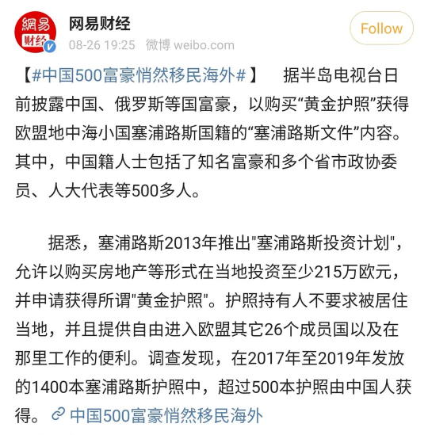
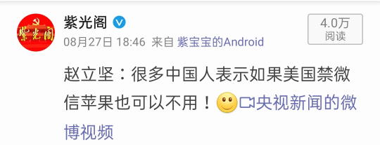

2020-08-27 08:40
上网乱转发现国际一流和谐宜居之都「高学历精英社交圈」正在首页今日头条位置醒目应景推荐了一条色目含量甚高的重要情报：

与此同时，漠北大手情报机构指使的岭南精盎情报掮客在向有关部门举报我的个人博客站点之余，还在奔走相告两条美帝灯塔国大选相关的时事新闻：

谁是「新时代纳粹」的隐喻已经很明显了，只不过党の川普大统领自己就有个犹太女婿，还率领全套领导班子高举《福音书》《启示录》不惜一切代价支持特拉维夫。
希腊东正教大牧首支持美国民主党，梵蒂冈不知道是否还会按照惯例支持「纳粹以色列」及其幕后推手「法西斯美国」，然后被莫斯科东正教大牧首嘲笑为「方济各有几个师」。
还有，在「匿名岛夷」看见了扶桑太君的「架空」，讨论当年二战见好就收的可能性：
シミュレーション
- 日本が持つ満州の利権を米国・英国に売却。
- 日本が朝鮮半島をユダヤ人に売却。ユダヤ人の国を建国させる。
- その売却した金で日本を近代化。
果たして、第二次世界大戦はどうなる？
后面都是很认真的讨论，素材不少，已经备份在本站了：
如果日本当年把满洲卖给英美，朝鲜卖给犹太人，拿钱回岛建设，二战会咋样？还没来得及标重点，当然「只懂汉语」的我肯定是乱画一气妄图瞎猫碰上死耗子嘛。
2020-08-27 10:00
洗完澡了精神抖擞容光焕发，上网乱转发现漠北大手情报机构指使的岭南精盎情报掮客在向有关部门匿名举报我的个人博客站点之余，还在匿名奔走相告一条斯拉夫含量甚高的重要情报：

简单说，精鹅情报掮客曾经谆谆教导过人民群众，说苏修体制内有默认的潜规则，乌克兰党委第一书记或乌克兰共产党总书记一定是苏共中央政治局委员，而白罗斯党委第一书记或白罗斯共产党总书记一定是苏共中央政治局候补委员。当然这个惯例在苏修如日中天的勃列日涅夫时期形成，之前之后都有些例外。
对照我中华兲朝上国，四个直辖市的市委书记以及广东和新疆的党委书记一定是中共中央政治局委员，也是惯例，并且是体制默认的潜规则。但是，时任上海市委书记一定会进入下一届常委，虽然最近几十年的惯例，但不是潜规则，许多党国栋梁对此嗤之以鼻，但是遭到了国际化大都市「华语第一精日论坛」消息灵通的色目情报掮客之肆意嘲笑。
至于为什么，娱乐至死の色目逗哔就用划时代大作《海贼王》当中的「天龙人」举例，说不远万里从三洲通衢偷渡入境在上海落户的色目太君以及不远万里从内亚偷渡入境在上海落户的波斯太君，明争暗斗的同时还达成了台面下的默契，每一届上海市委书记都必须是马瓦力，要有充沛的自知之明认识到自己不过是三洲通衢遥控的奴才「vtuber皮」。
而干部候选名单之上的青年才俊，通常是哪儿来的野种以「祂欺也」原则伪装成汉族并在专用「畜栏」培养，从小就被一套虚假的人际关系所包围，凡是见到复旦残联下属滴血认亲实验室提供的鉴定报告就恍然大悟血浓于水的唯物主义真理于是血脉觉醒了胎里坏种族天赋的可造之材，会坐直升机般提拔起来一路青云直上主席台。
与此相反，凡是坚定立场不动摇没有被周边「梦境」所诈骗的不识大体不顾大局不懂政治不讲规矩不守纪律的人缘差情商低的不自量力的螳臂挡车的跳梁小丑，一律出动绿皮中年妇女追着喷「滚回巴基斯坦阿富汗去，上海不是你的家」，而上海回民广播电台也会实时玉音放送敬语「请您团成一团，圆润的离开」。
回头再看这条斯拉夫情报，应该是隐藏很深的马瓦力暴露了，教会正在清理门户。不惮以最大的恶意揣测，当初东正教会架构换个皮而形成的苏共组织形式，会再换层皮照搬回东正教教会，「全联盟东正教（布尔什维克）第一次代表大会」即将召开。
摘抄几段维基百科：
目前东正教16个自主教会：各自主教会实际上都是平权的；然而按历史荣誉顺序排序如下：
- 君士坦丁堡及普世正统基督教会
- 亚历山大及全非洲地区正统基督教会
- 安提阿及全中东地区正统基督教会
- 耶路撒冷及全巴勒斯坦地区正统基督教会
- 俄罗斯正教会（建立于1589年）
- 格鲁吉亚正教会（建立于466年）
- 塞尔维亚正教会（建立于1219年）
- 罗马尼亚正教会（建立于1925年）
- 保加利亚正教会（建立于927年）
- 塞浦路斯正教会（建立于434年）
- 希腊正教会（建立于1850年）
- 阿尔巴尼亚正教会（建立于1937年）
- 波兰正教会（建立于1924年）
- 捷克和斯洛伐克正教会（建立于1951年）
- 美洲正教会（建立于1972年，尚未被广泛承认为自主教会）
- 乌克兰正教会（建立于2018年，尚未被广泛承认为自主教会）
东正教自主教会之下，分管辖的教区和自治教会。例举如下：
君士坦丁堡正教会下设：
- 芬兰正教会
- 爱沙尼亚正教会
- （前中华民国，现中国台湾省）基督正教会
- 韩国正教会
俄罗斯正教会下设：
- 拉脱维亚正教会
- 摩尔多瓦正教会
- 乌克兰正教会（宗俄）
- 日本正教会
- 朝鲜正教会
- 中华东正教会（1949年中华人民共和国成立，与苏联政府签订协议令教会脱离俄罗斯正教会管制，20世纪50年代中华正教会自治。因两位中国籍阿尔巴津人主教相继去世，也未曾按立新的主教继任，文革前教会基本停止活动。）
1991年苏联解体后，俄罗斯正教会逐渐恢复其过去拥有的政治和宗教影响力。2000年普京上台后，俄罗斯正教会的宗教影响力增加。普京上任以来，一直推广一套在西方眼中颇为保守的价值观，这与俄罗斯东正教教廷内的保守派所一直提倡的观念不谋而合。
2016年2月12日，基里尔一世代表俄罗斯正教会在古巴访问，期间在何塞·马蒂国际机场与天主教会教宗方济各会面。双方签署联合声明，呼吁各方合力对付恐怖主义和迫害基督徒的行为。同年，俄罗斯正教会与塞尔维亚正教会、格鲁吉亚正教会共同抵制了君士坦丁堡普世牧首发起的旨在加强普世牧首权威的大公会议。
2018年9月15日，由于在乌克兰教会自治权问题上的争议，俄罗斯正教会宣布与君士坦丁堡牧首区断绝关系。其起因则是君士坦丁堡教会于同年9月7日承认了乌克兰正教会的正统性。10月15日，在君士坦丁堡正式撤回1686 年基辅宗主教区转让决议后，俄罗斯正教会至圣主教公会宣布中止其神职人员及平信徒与君士坦丁堡的共融。并将君士坦丁堡的行动视为对信仰的最大“侵犯”。
简单说，白罗斯「宗教」事务是由莫斯科迪纳摩教廷直接管理，是「下属支部」不是「子公司」也不是「分公司」，所以这条情报企图煽动的根据现实国界而产生的「世俗」对立并不成立，漠北大手情报机构基辅迪纳摩指使的岭南精盎情报掮客闲得慌还是继续匿名举报别人的个人博客去吧。
好啦，最近土耳其正在大力推广「新朝雅政」，圣索菲亚大教堂又从博物馆改回清真寺了，这下「君士坦丁堡普世牧首」是不是应该有些表示呢？没有也没关系，老窝又被绿人端了，大耳贴子抽得啪啪响，说话未必管用了，就看「他有几个师」名言啥时候再出场。
2020-08-27 13:00
下午了，上网乱转发现一条马瓦力含量甚为充沛的重要情报：
然后有老迈年高的人民群众指出，这是抄袭剽窃借鉴了阿塞拜疆苏维埃社会主义共和国的旗帜：
还有老迈年高的人民群众曰若稽古，当年革命导师圣列宁的贴身警卫连都是拉脱维亚人，而后来的苏修内务部（就是政治笑话当中深更半夜破门而入的那个大手情报机构）所有领导干部都是拉脱维亚人。
而国际一流和谐宜居之都「高学历精英社交圈」首页刷了一屏「五胡乱华难以避免」的内容，其悲观厌世的心态跃然屏上。国际化大都市「华语第一精日论坛」之上色目情报掮客又是一片狂欢。
不惮以最大的恶意揣测，国际一流和谐宜居之都大街小巷当中充沛的色目混混鸡鸣狗盗之徒会多出一个数量级，与「新时代回民警察」勾肩搭背称兄道弟推杯换盏的嚣张气焰也会频繁出一个数量级。
出门酗酒顺便搜集情报去了。
2020-08-28 05:40
刚爬起来酒劲还在头昏脑胀，上网乱转发现国际化大都市「华语第一精日论坛」出现一条漠北大手情报机构指使的岭南精盎情报掮客在向有关部门匿名举报我的个人博客站点之余，还在匿名举报「大众创业万众创新」然后深圳南山区依法治国的重要情报：
看到新闻有感，微信被封对做小生意的人打击真的大在朋友圈里做生意的，那微信号就是他全部生计所在，投入数年的精力，培养的数百客户一下全部消灭，没有其他渠道可以联系，那就相当于清零吧。心理稍微脆弱一点，承受不住是很正常的。
关键是，一个软件真的不应该占据这么重要的位置……有个生意全在微信上的亲戚和我关系很好，所以看到新闻后心有戚戚焉。
“社交权限和金融权限混淆”
是的。
老外互联网比我们早普及十几年，所以一直有对大公司掌握个人生活的担忧
欧洲也能搞出来GDPR
咱们这边这方面意识还比较落后
话说封号理由到底是啥，我看的新闻只说有违法违规，这tx比zf还牛逼了
现在流传最广的说法是和人聊天的时候发色图被漠北大手情报机构指使的岭南精盎情报掮客向有关部门匿名举报然后就被封了，理由是“涉及淫秽色情”......
据说三天是后改的
出这事之前是永封……
中国会明确说你违反了规则的哪一条哪一款的网站有吗？
我在知乎被封了几次，从来都只说我违规了，在申诉里问到底违反哪一条也从来没有被回应过。
说起来泥潭有一点做的真的很好，就是关黑屋的起码还说清楚到底为什么关。虽然很多时候关的理由也很生草，但是起码不藏着掖着。
结合之前公安机关失误导致大批tx账号被封的案例，我觉得说不定腾讯自己也不知道原因
感觉这玩意全世界都没哪个网站好好搞，推和油管封号都不怎么解释的，reddit还有臭名昭著的shadowban。。。当然把钱和社交搞在一起软件就微信独此一家。。。
当然申诉有没有用就不知道了，没被封过
 这种举报人，99%根本就没有身份证
企鹅就是喜欢玩这一套，其实不过是漠北大手情报机构的系统检测到了异常。
然后给你扣一个，被岭南精盎情报掮客举报，让你找已经改信东正教移民塞浦路斯但还不会说希腊语的举报人去的麻烦。
老外怕大公司可不是因为互联网早好吗，大资本作恶可是在他们的世界里真实发生过的事情，想想请对手做土飞机的杜邦，想想用雇佣兵搞拆迁的洛克菲勒。至于我们，大部分中国人其实并不清楚垄断资本做起恶来是啥样子的
原po评论里那个etc绑定微信之后微信被封导致自己失信的也太可怕了，这种情况没办法解决吗
这个东西也有很多讨论~
前信息化阶段，对垄断的批判还是集中在经济社会比较宏观方面，一个托拉斯也很少去主动跟一个个人过不去。得借助外部手段，比如说侦探杀手什么的。
信息化时代就不一样了，属于那种你稍微想想就躺床上睡不着觉的那种恐惧。想搞死你就是数据库里一条指令的事儿。
VX的司马性质不变，但昨天隔壁有个微软贴，事主也是win账号被封了所有服务被连坐了。2楼引用的说法很有道理，而且推导到微软上也能成立：windows的购买、outlook的邮箱使用权、office的订阅、onedrive的网盘服务也应当是分开的，一项违规就一刀切ban一切也是不合理的。
没有造成微信这样恶劣情况，纯粹是因为西方传统银行和金融行业势力太强大了，不流行向纯互联网社交app接入涉及支付的服务。而且垄断程度稍轻，还有谷歌/FB/苹果等其他巨头分走IM等业务，不会像腾讯这样all in one，涉及的影响面太大。也就是一堆外部环境导致了外国大公司随意封号的危害没有微信里的这个案例重，但至于你个人担忧还是不担忧，基本都是有心无力，对大公司的我行我素没太大影响。
PS: 找了个涉及资金财产的，亚马逊的封号，卖家账户里还有大量资金也被顺带冻结，投诉无门（https://www.cifnews.com/article/65986）。这些东西哪里都是一样的，只不过因为腾讯垄断的行当多，导致微信一个号涉及的影响面广
这真的很可怕，像三体里面写的，罗辑醒了以后被智子追杀，真要全面发展以后，封号不仅仅是一个社交媒体的事，而是你整个寸步难行，钱没有了，亲友联系方式没有了，出门坐不了车，甚至于外面发生什么消息你也不知道，没法上网，而且还找不到地方申诉，打电话全是机器人，不知道为什么，没有人跟你解释，不知道等多久。。。
这个时候就要说运营商的好了，你看哪家运营商敢因为你发骚扰短信封你手机号的
没有工信部在后面用刀顶着，运营商能给你的号码加上100个付费服务…
其实是有限制的。
之前一个类似情况是民宿老板给客户发入住信息，发信息频次太高了（也就一个月几百条），被判定为垃圾信息，运营商封了他短信发送功能。
而且很恶心的是短信提示已发出，但是对方接不到。导致很多客户纠纷。
给运营商客服打电话，客服全是套路回复，问题解决不了。猜测是触发了运营商某个拦截系统，然后客服也找不到对这个系统的操作入口。
别说私人电话，我就遇到过用政府电话通知几百人人开会，电信把电话封锁的破事，电信说严打，是工信部直接在什么数据库里面封的，让我一天不要打太多，我问多少算太多，他说一小时5个，一天20个以内。这可是实实在在登记在册的市政府电话哦，电信也没办法解封，我们只好用四五个座机加手机去通知开会，最后统计下来封了2个座机，1个手机
问题在于什么是黄图呢？今天tx某个临时工觉得露点的是黄图，明天露点小沟的也是黄图了，找谁说理去？机器人？
莫须有的H图
而且还是他们自己说是黄图，你也没有证据表示自己没有发。万一以后说不许开小号，一个人只许一个微信。。。
营业有营业的规矩。社交有社交的规矩。
要么禁止一切微信上的营业活动。或者从事营业活动你得注册个店铺,认证一下。
个人社交跟经营活动不分界线，就容易乱
 是的，这才是最恐怖的。几年前我坚决不用微信，只用QQ还是极速版(电脑版也是)那几年到处找各种QQ极速版，都魔怔了。
但不知什么时候撒僻领导开始微信办公了，现在我已经绝望到放弃抵抗了。
全球资本家都差不多，好多facebook被ban的没处申冤，有些人把fb当作通讯录的更是人际关系一下倒退好几年。
听说非死不可已经甩锅剑桥分析了，说当时审查岗位外包给英国，就为了让川普当选，今年不知道外包给谁，俄罗斯？
还有一些「还是马云家好」「从此只用支付宝」之类明显带节奏的回复不再备份。
已经不用展开了，一天之内发生的这些事，足够打通逻辑链了。一言以蔽之，苏维埃将在东正教会的基础上复活。
这次就没有什么「修正」之类的指责，东正教没有经历过宗教改革，照样当了千年「异端」。冷战时期天主教与新教阵营联手对抗东正教的意识形态背景，本来就是宗教原因，不是什么狗屁共产主义。